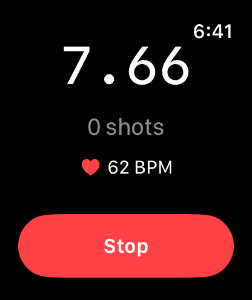

Watch — Control from your wrist
Control timers without touching your phone. Haptic cues and glanceable splits keep you focused where it matters.

What you get
- Haptic countdowns: Feel 3‑2‑1 starts, PAR warnings, and completion taps on your wrist.
- One‑tap controls: Start, stop, and mark shots quickly from the watch face.
- Glanceable splits: See recent split times and counts at a glance.
- Low‑interaction mode: Minimal UI so you stay focused on the shot.
- Works with AirPods: Audio cues can route through your iPhone to AirPods for private feedback.
- Run wrist‑only: Use the watch standalone; sessions appear on your phone when devices reconnect.